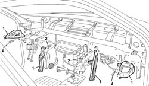

7040A05 facia/body bracket - fasten
- Path
- Procedures > 70 FITTINGS > 7040 BODYSHELL INTERIOR TRIMS AND FITTINGS > 7040A passenger compartment trim > 7040A05 facia/body bracket - fasten
- Kind
- repair procedure (removal / refitting; the operation number is the code)
- Applies to
- all engines; all production periods
- Interactive page
- https://sloeber94.github.io/elrnDB-a156/en/#/3238787
Applies to: all engines; all production periods
1. Position the bracket.
2. Tighten the screws.
